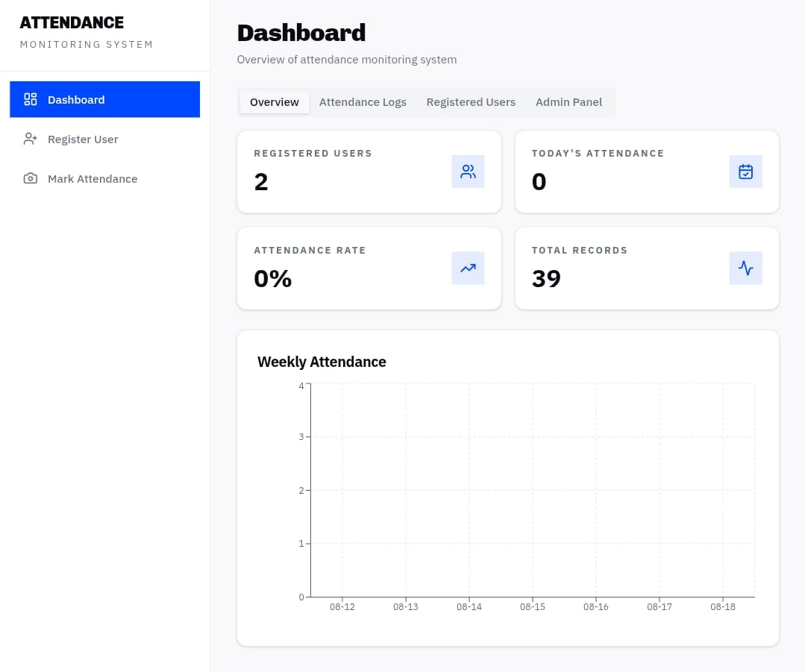
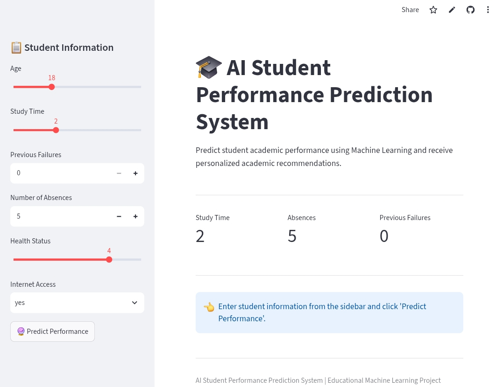
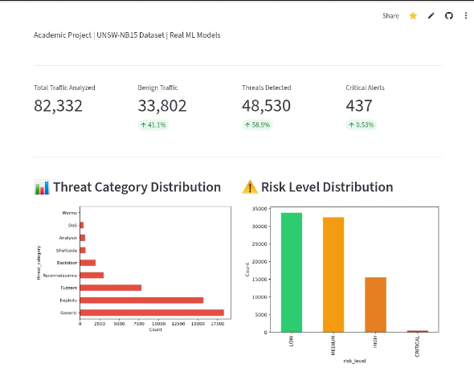

01FEATURED▶View details
AI Student Attendance
Computer vision · Automation
HELLO, I'M
I turn curiosity into code — building practical solutions with Artificial Intelligence, Machine Learning and Python.
CURATED WORK

01FEATUREDComputer vision · Automation

02Prediction · Model evaluation

03Threat detection · Data insights
Local services · Community tech
Select any title to explore its details, technologies and available links.
BEHIND THE BUILD
I am an aspiring AI/ML developer interested in building practical technology solutions. I enjoy working with Python, exploring machine-learning concepts and turning ideas into useful projects.
I keep improving through hands-on practice and experimentation, with a goal of creating meaningful solutions and gaining real-world experience.
MY TOOLKIT
Python · C · HTML · CSS · JavaScript
Machine Learning · Generative AI · Model Evaluation
Pandas · EDA · Matplotlib · Data Visualization
Google Colab · GitHub · Flask · Streamlit · VS Code
CAREER DEVELOPMENT
SR Institute of Management and Technology
Current CGPA: 7.54Anandi Devi SVM Inter College, Sitapur
Practical exposure to Artificial Intelligence.
NASSCOM FutureSkills Prime certification.
Workshops and certifications to build a foundation in emerging AI tools.
Certificate links open their issuing platform. IBM PBEL verification is hosted by IBM Developer Skills Network.
YOUR NEXT COLLABORATOR?
Open to internships, learning opportunities, collaborations and conversations about AI and technology.